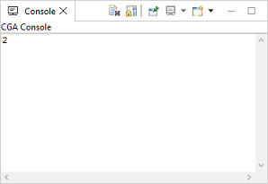
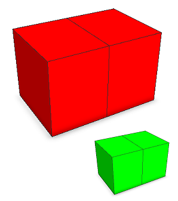

Context (and occlusion) queries
List of available context queries
Context queries are functions that return information about contextual shapes in the environment of the current shape. Occlusion queries are special context queries that return information about the mutual intersection of geometries.
Occlusion queries
| inside | Returns true if current shape is inside another shape geometry. |
| overlaps | Returns true if current shape overlaps another shape geometry. |
| touches | Returns true if current shape touches another shape geometry. |
General context queries
| minimumDistance | Returns distance of current scope to scope of another labeled shape. |
| contextCompare | Returns the rank of the current shape geometry among other labeled shape geometries according to a specific comparator. |
| contextCount | Returns the number of labeled shapes in the environment. |
Target selectors
For all functions the target selector determines what the current geometry is tested against and can either be intra, inter, or all. Thus, the current geometry can be tested against geometries of shapes:
| intra | in the same shape tree (i.e. from the same initial shape), or |
| inter | in other shape trees (i.e. generated by other initial shapes in the neighborhood), or |
| all | in both the same and other shape trees. |
If no target selector is given (occlusion queries), all is set as default.
Specifics on inter context
Neighborhood distance
The initial shapes within a user-defined neighborhood distance to the bounding box of the current initial shape are taken into account. Distances are available for:
- occlusion queries with a default of 1, and
- context queries with a default of infinity, i.e. the distance is ignored and all shapes in the scene are considered.
The defaults are reasonable for most cases. The distances can be modified in the Procedural Runtime preferences and are stored per scene.
Scenarios
Whether inter context queries consider initial shapes in their environment depends on the scenario the shapes belong to:
- Shapes of a scenario are not considered by queries of default shapes.
- Default shapes are considered by queries of shapes of a scenario.
- Default shapes are considered by queries of default shapes.
- Shapes of a scenario are considered by queries of shapes of a scenario if they share at least one common scenario.
Two-pass generation process
At the time context queries are evaluated not all geometries that could be relevant have been generated. Additionally, context queries are typically applied in the conditional part of a rule. Their result can influence the generated model and, therefore, in turn could change the result of the queries. Because of that, a special deterministic two-pass generation process is performed for intra context:
-
Shape trees are generated with intra queries returning a default value:
inside false overlaps false touches false minimumDistance infinity contextCompare 0 contextCount 0 - The derivation is re-started. This time intra context queries are evaluated by testing against the previously generated geometries of step 1.
In the case of inter context, a deterministic behavior is achieved by similar means. All inter queries of models in the neighborhood of the current initial shape return default values. The described method proved to be satisfactory in most practical use case scenarios.
Related
Examples
Labels

Lot --> label("label")
print(contextCount(intra, "label"))
label("label")
In a first generation process each label operation creates a labeled copy of the current shape. In the second pass, the contextCount query function is used to retrieve the number of all shapes with label "label".
Conditions

Lot --> comp(f) { all : extrude(10) Test }
Test --> case overlaps(intra): Red
else: s('2,'1,'2) center(xyz) Green
Red --> color(1,0,0)
Green --> color(0,1,0)
In this example the Lot rule is applied to an initial single shape with two faces (intra occlusion). The default false case of overlaps enlarges the extruded volume. Therefore, the geometry intersects the neighboring extruded volume, and the overlaps query returns true. The enlarged occluder shape is not visible.
Test --> case overlaps(intra) : s('2,'1,'2) center(xyz) Red
else : Green
In contrast, if we enlarge the extruded volume in the non-default true case, the overlaps query returns false.